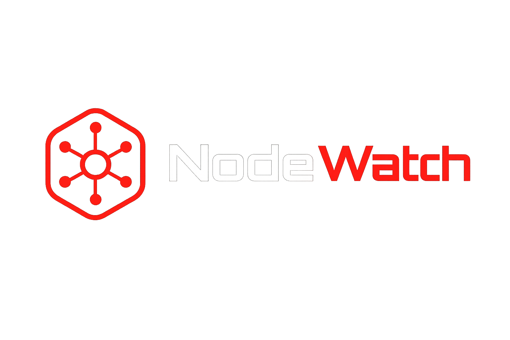

<!DOCTYPE html>
<html lang="pt-BR">
<head>
  <meta charset="UTF-8" />
  <meta name="viewport" content="width=device-width, initial-scale=1.0" />
  <title>NodeWatch — Detecção de Ciclos Suspeitos</title>
  <link rel="preconnect" href="https://fonts.googleapis.com" />
  <link rel="preconnect" href="https://fonts.gstatic.com" crossorigin />
  <link href="https://fonts.googleapis.com/css2?family=Inter:wght@400;500;600&family=JetBrains+Mono:wght@400;500;600;700&display=swap" rel="stylesheet" />
  <script src="https://unpkg.com/react@18/umd/react.production.min.js" crossorigin></script>
  <script src="https://unpkg.com/react-dom@18/umd/react-dom.production.min.js" crossorigin></script>
  <script src="https://unpkg.com/@babel/standalone/babel.min.js"></script>
  <style>
    *, *::before, *::after { box-sizing: border-box; margin: 0; padding: 0; }
    html, body, #root { height: 100%; }
    body { background: #131820; overflow-x: hidden; }
    details > summary { list-style: none; }
    details > summary::-webkit-details-marker { display: none; }
  </style>
</head>
<body>
  <div id="root"></div>

  <!-- 1. DADOS — espelha dados/exemplo_transacoes.csv -->
  <script>
  window.FRAUD_DATA = (() => {
    const transactions = [
      { step:1,  type:'TRANSFER', amount:10000.00, src:'C001', dst:'C002', isFraud:0 },
      { step:1,  type:'TRANSFER', amount:10000.00, src:'C002', dst:'C003', isFraud:0 },
      { step:2,  type:'TRANSFER', amount: 9800.00, src:'C003', dst:'C001', isFraud:1 },
      { step:2,  type:'TRANSFER', amount:  500.00, src:'C001', dst:'C002', isFraud:0 },
      { step:3,  type:'PAYMENT',  amount:  200.00, src:'C004', dst:'C005', isFraud:0 },
      { step:3,  type:'PAYMENT',  amount:  150.00, src:'C004', dst:'C005', isFraud:0 },
      { step:4,  type:'TRANSFER', amount: 3000.00, src:'C006', dst:'C007', isFraud:0 },
      { step:4,  type:'TRANSFER', amount: 2950.00, src:'C007', dst:'C008', isFraud:0 },
      { step:5,  type:'TRANSFER', amount: 2900.00, src:'C008', dst:'C006', isFraud:1 },
      { step:6,  type:'CASH_OUT', amount: 1200.00, src:'C009', dst:'C010', isFraud:0 },
      { step:7,  type:'CASH_IN',  amount: 5000.00, src:'EXTERNAL', dst:'C001', isFraud:0 },
      { step:8,  type:'DEBIT',    amount:  300.00, src:'C004', dst:'C003', isFraud:0 },
      { step:9,  type:'TRANSFER', amount: 8000.00, src:'C011', dst:'C012', isFraud:0 },
      { step:10, type:'TRANSFER', amount: 7800.00, src:'C012', dst:'C013', isFraud:0 },
      { step:11, type:'TRANSFER', amount: 7600.00, src:'C013', dst:'C014', isFraud:0 },
      { step:12, type:'TRANSFER', amount: 7400.00, src:'C014', dst:'C011', isFraud:1 },
    ];
    const vertices = [...new Set(transactions.flatMap(t=>[t.src,t.dst]))].sort();
    const cycles = [
      {
        id:1, category:'CICLO', priority:'ALTO',
        path:['C001','C002','C003','C001'],
        edges:[
          {src:'C001',dst:'C002',amount:10000.00,type:'TRANSFER',step:1},
          {src:'C002',dst:'C003',amount:10000.00,type:'TRANSFER',step:1},
          {src:'C003',dst:'C001',amount: 9800.00,type:'TRANSFER',step:2},
        ],
        total:29800.00, loss:200.00, duration:2,
      },
      {
        id:2, category:'CICLO', priority:'ALTO',
        path:['C006','C007','C008','C006'],
        edges:[
          {src:'C006',dst:'C007',amount:3000.00,type:'TRANSFER',step:4},
          {src:'C007',dst:'C008',amount:2950.00,type:'TRANSFER',step:4},
          {src:'C008',dst:'C006',amount:2900.00,type:'TRANSFER',step:5},
        ],
        total:8850.00, loss:100.00, duration:2,
      },
      {
        id:3, category:'CICLO', priority:'ALTO',
        path:['C011','C012','C013','C014','C011'],
        edges:[
          {src:'C011',dst:'C012',amount:8000.00,type:'TRANSFER',step:9},
          {src:'C012',dst:'C013',amount:7800.00,type:'TRANSFER',step:10},
          {src:'C013',dst:'C014',amount:7600.00,type:'TRANSFER',step:11},
          {src:'C014',dst:'C011',amount:7400.00,type:'TRANSFER',step:12},
        ],
        total:30800.00, loss:600.00, duration:4,
      },
    ];
    /* SCCs detectados via Kosaraju */
    const sccs = [
      {id:1, vertices:['C011','C012','C013','C014'], size:4, volume:30800.00, edges:4, suspicious:true},
      {id:2, vertices:['C001','C002','C003'],        size:3, volume:30300.00, edges:4, suspicious:true},
      {id:3, vertices:['C006','C007','C008'],        size:3, volume:8850.00,  edges:3, suspicious:true},
    ];
    /* Centralidade de grau */
    const centrality = [
      {id:'C001',inDeg:2,outDeg:2,degree:4,cycleCount:1,riskScore:55,hubType:'SUSPEITO'},
      {id:'C002',inDeg:2,outDeg:1,degree:3,cycleCount:1,riskScore:55,hubType:'SUSPEITO'},
      {id:'C003',inDeg:2,outDeg:1,degree:3,cycleCount:1,riskScore:55,hubType:'SUSPEITO'},
      {id:'C006',inDeg:1,outDeg:1,degree:2,cycleCount:1,riskScore:55,hubType:'SUSPEITO'},
      {id:'C007',inDeg:1,outDeg:1,degree:2,cycleCount:1,riskScore:55,hubType:'SUSPEITO'},
      {id:'C008',inDeg:1,outDeg:1,degree:2,cycleCount:1,riskScore:55,hubType:'SUSPEITO'},
      {id:'C011',inDeg:1,outDeg:1,degree:2,cycleCount:1,riskScore:55,hubType:'SUSPEITO'},
      {id:'C012',inDeg:1,outDeg:1,degree:2,cycleCount:1,riskScore:55,hubType:'SUSPEITO'},
      {id:'C013',inDeg:1,outDeg:1,degree:2,cycleCount:1,riskScore:55,hubType:'SUSPEITO'},
      {id:'C014',inDeg:1,outDeg:1,degree:2,cycleCount:1,riskScore:55,hubType:'SUSPEITO'},
      {id:'C004',inDeg:0,outDeg:3,degree:3,cycleCount:0,riskScore:15,hubType:'NORMAL'},
      {id:'EXTERNAL',inDeg:0,outDeg:1,degree:1,cycleCount:0,riskScore:10,hubType:'NORMAL'},
      {id:'C009',inDeg:0,outDeg:1,degree:1,cycleCount:0,riskScore:30,hubType:'NORMAL'},
      {id:'C005',inDeg:2,outDeg:0,degree:2,cycleCount:0,riskScore:0,hubType:'COLETOR'},
      {id:'C010',inDeg:1,outDeg:0,degree:1,cycleCount:0,riskScore:0,hubType:'COLETOR'},
    ];
    const positions = {
      C001:{x:200,y:150}, C002:{x:330,y:90},  C003:{x:330,y:210},
      C004:{x:450,y:55},  C005:{x:555,y:120}, C006:{x:200,y:360},
      C007:{x:330,y:300}, C008:{x:330,y:420}, C009:{x:555,y:300},
      C010:{x:660,y:360}, C011:{x:570,y:80},  C012:{x:690,y:150},
      C013:{x:690,y:250}, C014:{x:570,y:320}, EXTERNAL:{x:75,y:150},
    };
    const positionsHierarchical = {
      C001:{x:90,y:80},  C002:{x:200,y:80},  C003:{x:310,y:80},  C004:{x:420,y:80},
      C005:{x:90,y:220}, C006:{x:200,y:220}, C007:{x:310,y:220}, C008:{x:420,y:220},
      C009:{x:90,y:360}, C010:{x:200,y:360}, C011:{x:310,y:360}, C012:{x:420,y:360},
      C013:{x:530,y:80}, C014:{x:530,y:220}, EXTERNAL:{x:530,y:360},
    };
    const positionsCircular = (() => {
      const out={}, cx=400, cy=250, r=210;
      vertices.forEach((v,i)=>{
        const a=(i/vertices.length)*Math.PI*2 - Math.PI/2;
        out[v]={x:cx+r*Math.cos(a), y:cy+r*Math.sin(a)};
      });
      return out;
    })();
    const accountRisk = {
      C001:55,C002:55,C003:55,C006:55,C007:55,C008:55,
      C011:55,C012:55,C013:55,C014:55,
      C004:15,C005:0,C009:30,C010:0,EXTERNAL:10,
    };
    const topAccounts = (() => {
      const vol={};
      transactions.forEach(t=>{ vol[t.src]=(vol[t.src]||0)+t.amount; });
      return Object.entries(vol)
        .map(([id,v])=>({id,volume:v,risk:accountRisk[id]||0}))
        .sort((a,b)=>b.volume-a.volume);
    })();
    const buckets = [
      {label:'< 1k',    min:0,     max:1000,    count:0},
      {label:'1k–5k',   min:1000,  max:5000,    count:0},
      {label:'5k–10k',  min:5000,  max:10000,   count:0},
      {label:'10k–25k', min:10000, max:25000,   count:0},
      {label:'> 25k',   min:25000, max:Infinity,count:0},
    ];
    transactions.forEach(t=>{
      const b=buckets.find(b=>t.amount>=b.min&&t.amount<b.max);
      if(b) b.count++;
    });
    const stepDist={};
    transactions.forEach(t=>{
      if(!stepDist[t.step]) stepDist[t.step]={total:0,fraud:0};
      stepDist[t.step].total++;
      if(t.isFraud) stepDist[t.step].fraud++;
    });
    return {
      transactions,vertices,cycles,sccs,centrality,
      positions,positionsHierarchical,positionsCircular,
      accountRisk,topAccounts,buckets,stepDist,
      stats:{
        vertexCount:vertices.length,
        edgeCount:transactions.length,
        fraudCount:transactions.filter(t=>t.isFraud).length,
        cycleCount:cycles.length,
        sccSuspiciousCount:sccs.filter(s=>s.suspicious).length,
      },
    };
  })();
  </script>

  <!-- 2. UTILITÁRIOS -->
  <script>
    function fmtBRL(v){
      return new Intl.NumberFormat('pt-BR',{style:'currency',currency:'BRL',minimumFractionDigits:2}).format(v);
    }
    function fmtBRLshort(v){
      if(v>=1e6) return 'R$ '+(v/1e6).toFixed(1).replace('.',',')+' M';
      if(v>=1e3) return 'R$ '+(v/1e3).toFixed(1).replace('.',',')+' k';
      return fmtBRL(v);
    }
  </script>

  <!-- 3. INTERFACE -->
  <script type="text/babel">

  /* ── GraphView ─────────────────────────────────────────────────── */
  const GraphView = ({data, layout, colors:c, activeCycle, showAmounts}) => {
    const pos =
      layout==='hierarchical' ? data.positionsHierarchical :
      layout==='circular'     ? data.positionsCircular :
      data.positions;

    const mono = '"JetBrains Mono", monospace';

    const cycleEdgeSet = React.useMemo(()=>{
      const s=new Set();
      data.cycles.forEach((cy,ci)=>cy.edges.forEach(e=>s.add(`${e.src}->${e.dst}#${ci}`)));
      return s;
    },[data]);

    const cycleVertexSet = React.useMemo(()=>{
      const s=new Set();
      data.cycles.forEach(cy=>cy.path.forEach(v=>s.add(v)));
      return s;
    },[data]);

    const isInCycle=(src,dst)=>{
      for(let ci=0;ci<data.cycles.length;ci++)
        if(cycleEdgeSet.has(`${src}->${dst}#${ci}`)) return ci;
      return -1;
    };

    /* curva quadrática; labelT desloca o ponto do pill ao longo da curva */
    const buildEdge=(a,b,dir=1,labelT=0.5)=>{
      const dx=b.x-a.x, dy=b.y-a.y;
      const len=Math.sqrt(dx*dx+dy*dy)||1;
      const r=22, ux=dx/len, uy=dy/len;
      const sx=a.x+ux*r, sy=a.y+uy*r;
      const ex=b.x-ux*r, ey=b.y-uy*r;
      const mx=(sx+ex)/2, my=(sy+ey)/2;
      const cpx=mx-uy*28*dir, cpy=my+ux*28*dir;
      const t=labelT;
      const lx=(1-t)*(1-t)*sx+2*(1-t)*t*cpx+t*t*ex;
      const ly=(1-t)*(1-t)*sy+2*(1-t)*t*cpy+t*t*ey;
      return {d:`M ${sx} ${sy} Q ${cpx} ${cpy} ${ex} ${ey}`, mid:{x:lx,y:ly}};
    };

    const edgeIdx={}, labelCountMap={};
    const edges=data.transactions.map((t,i)=>{
      const a=pos[t.src], b=pos[t.dst];
      if(!a||!b) return null;
      const k=`${t.src}-${t.dst}`;
      edgeIdx[k]=(edgeIdx[k]||0)+1;
      const dir=edgeIdx[k]%2===0?-1:1;
      const ci=isInCycle(t.src,t.dst);
      const inCycle=ci>=0;
      const isActive=activeCycle==null||ci===activeCycle;
      /* deslocar label ao longo da curva para evitar sobreposição */
      let labelT=0.5;
      if(inCycle){
        const n=(labelCountMap[k]||0);
        labelT = n===0 ? 0.38 : n===1 ? 0.62 : 0.5;
        labelCountMap[k]=n+1;
      }
      const {d,mid}=buildEdge(a,b,dir,labelT);
      return {id:i,d,mid,inCycle,isActive,ci,amount:t.amount};
    }).filter(Boolean);

    return (
      <svg viewBox="0 0 800 500" width="100%" height="100%"
           style={{display:'block',overflow:'visible'}}>
        <defs>
          <marker id="arr-n" viewBox="0 0 10 10" refX="9" refY="5"
                  markerWidth="5" markerHeight="5" orient="auto-start-reverse">
            <path d="M0 0L10 5L0 10z" fill={c.muted} opacity="0.5"/>
          </marker>
          <marker id="arr-c" viewBox="0 0 10 10" refX="9" refY="5"
                  markerWidth="6" markerHeight="6" orient="auto-start-reverse">
            <path d="M0 0L10 5L0 10z" fill={c.danger}/>
          </marker>
          <filter id="glow" x="-50%" y="-50%" width="200%" height="200%">
            <feGaussianBlur stdDeviation="4" result="b"/>
            <feMerge><feMergeNode in="b"/><feMergeNode in="SourceGraphic"/></feMerge>
          </filter>
        </defs>

        {edges.filter(e=>e.inCycle&&e.isActive).map(e=>
          <path key={`h${e.id}`} d={e.d} fill="none"
                stroke={c.danger} strokeWidth="10" strokeOpacity="0.13" strokeLinecap="round"/>
        )}
        {edges.filter(e=>!e.inCycle).map(e=>
          <path key={`n${e.id}`} d={e.d} fill="none"
                stroke={c.muted} strokeWidth="1.25"
                strokeOpacity={activeCycle!=null?0.15:0.35}
                markerEnd="url(#arr-n)"/>
        )}
        {edges.filter(e=>e.inCycle).map(e=>
          <g key={`c${e.id}`} opacity={e.isActive?1:0.2}>
            <path d={e.d} fill="none" stroke={c.danger}
                  strokeWidth="2.25" markerEnd="url(#arr-c)"/>
            {showAmounts&&(
              <g>
                <rect x={e.mid.x-32} y={e.mid.y-11} width="64" height="22" rx="11"
                      fill={c.panel} stroke={c.danger} strokeWidth="1"/>
                <text x={e.mid.x} y={e.mid.y+5}
                      fill={c.danger} fontSize="10" fontWeight="700"
                      textAnchor="middle" style={{fontFamily:mono}}>
                  {e.amount>=1000
                    ?`R$${(e.amount/1000).toFixed(1)}k`
                    :`R$${e.amount.toFixed(0)}`}
                </text>
              </g>
            )}
          </g>
        )}
        {data.vertices.map(v=>{
          const p=pos[v]; if(!p) return null;
          const inC=cycleVertexSet.has(v);
          return (
            <g key={v}>
              {inC&&<circle cx={p.x} cy={p.y} r="26"
                             fill={c.danger} opacity="0.12" filter="url(#glow)"/>}
              <circle cx={p.x} cy={p.y} r="22"
                      fill={inC?c.dangerBg:c.panel}
                      stroke={inC?c.danger:c.muted}
                      strokeWidth={inC?2:1.25}
                      strokeOpacity={inC?1:0.55}/>
              <text x={p.x} y={p.y+4}
                    fill={inC?c.danger:c.text}
                    fontSize="11" fontWeight={inC?700:500}
                    textAnchor="middle"
                    style={{fontFamily:mono,pointerEvents:'none'}}>{v}</text>
            </g>
          );
        })}
      </svg>
    );
  };

  /* ── SentinelChat ────────────────────────────────────────────────── */
  const SentinelChat = ({data, activeCycle, colors: c}) => {
    const [isOpen, setIsOpen] = React.useState(false);
    const [messages, setMessages] = React.useState([]);
    const [input, setInput] = React.useState('');
    const [loading, setLoading] = React.useState(false);
    const [backendOk, setBackendOk] = React.useState(null);
    const [languageMode, setLanguageMode] = React.useState(()=>{
      const saved = localStorage.getItem('sentinelLanguageMode');
      return (saved==='leiga'||saved==='tecnica') ? saved : 'leiga';
    });
    const messagesEndRef = React.useRef(null);
    const inputRef = React.useRef(null);
    const mono = '"JetBrains Mono",ui-monospace,monospace';
    const sans = '"Inter",-apple-system,sans-serif';

    const SENTINEL_URL = window.location.protocol.startsWith('http')
      ? window.location.origin
      : 'http://127.0.0.1:5000';

    React.useEffect(()=>{
      fetch(SENTINEL_URL+'/health').then(r=>{
        if(!r.ok) throw new Error(r.status);
        return r.json();
      }).then(d=>{
        setBackendOk(d.status==='ok');
      }).catch(()=>setBackendOk(false));
    },[]);

    React.useEffect(()=>{
      messagesEndRef.current?.scrollIntoView({behavior:'smooth'});
    },[messages]);

    React.useEffect(()=>{
      if(isOpen && inputRef.current) inputRef.current.focus();
    },[isOpen]);

    const SENTINEL_UI_CATALOG = {
      telaAtual:'Dashboard',
      componentes:[
        {
          nome:'Barra de Alerta',
          tipo:'banner_alerta',
          descricao:'Banner vermelho no topo informando quantidade de ciclos suspeitos detectados, valor em circulacao e contas envolvidas.',
          aliases:['alerta','banner vermelho','aviso de ciclos','alerta vermelho']
        },
        {
          nome:'Cards de Estatisticas',
          tipo:'cards_kpi',
          descricao:'Quatro cards no topo: Vertices (contas no grafo), Arestas (transacoes observadas), Volume total (valor movimentado) e Em risco (valor em ciclos suspeitos). O card Em risco tem borda vermelha indicando valor sob investigacao.',
          aliases:['estatisticas','resumo','metricas','numeros gerais','KPIs','cards','indicadores'],
          legendaCores:[
            {cor:'vermelho',significado:'Card "Em risco" - destaca o valor monetario envolvido nos ciclos suspeitos detectados'},
            {cor:'branco',significado:'Cards normais - Vertices, Arestas e Volume total'}
          ]
        },
        {
          nome:'Grafo Interativo',
          tipo:'visualizacao_grafo',
          descricao:'Visualizacao das contas como nos (circulos) e transacoes como setas direcionadas. Permite alternar layout (Force, Hierarquico, Circular) e exibir valores nas arestas.',
          aliases:['grafo','mapa de contas','conexoes','nos','arestas','grafo de transacoes'],
          legendaCores:[
            {cor:'vermelho (no)',significado:'Conta que participa de pelo menos um ciclo suspeito'},
            {cor:'cinza (no)',significado:'Conta normal, sem envolvimento em ciclos'},
            {cor:'vermelho (seta)',significado:'Aresta/transacao que faz parte de um ciclo suspeito'},
            {cor:'cinza (seta)',significado:'Transacao normal'}
          ]
        },
        {
          nome:'Ciclos Detectados',
          tipo:'painel_selecao_ciclos',
          descricao:'Painel lateral que permite selecionar qual ciclo visualizar (#1, #2, etc). Mostra o caminho detectado pelo DFS, timeline das contas com risk score, valores de cada transacao do ciclo, e metricas (total, perda, duracao).',
          aliases:['ciclos','lista de ciclos','alertas','ciclo selecionado','detalhes do alerta']
        },
        {
          nome:'Detalhes do Ciclo',
          tipo:'painel_detalhes',
          descricao:'Dentro do painel Ciclos Detectados, mostra as contas envolvidas com risk score, os valores monetarios de cada transacao no ciclo, o total circulado, a perda estimada e a duracao em steps.',
          aliases:['detalhes','detalhes do ciclo','contas envolvidas','timeline do ciclo','valores do ciclo']
        },
        {
          nome:'Top Contas por Risco',
          tipo:'cards_ranking',
          descricao:'Ranking das 5 contas com maior score de risco. Cada card mostra o ID da conta, score de risco (0-100), volume transacionado e uma barra de progresso colorida.',
          aliases:['top contas','ranking de risco','contas suspeitas','contas de maior risco'],
          legendaCores:[
            {cor:'vermelho',significado:'Score de risco >= 80 (alto risco)'},
            {cor:'amarelo',significado:'Score de risco entre 40 e 79 (risco moderado)'},
            {cor:'verde',significado:'Score de risco < 40 (baixo risco)'}
          ]
        },
        {
          nome:'Tabela de Transacoes',
          tipo:'tabela_colapsavel',
          descricao:'Tabela expansivel que lista todas as transacoes do CSV com colunas: step, tipo, valor, origem, destino, fraude (0 ou 1) e flags (EM CICLO, LABELED). Clique para expandir.',
          aliases:['tabela','lista de transacoes','transacoes','registros','dados brutos'],
          legendaCores:[
            {cor:'amarelo (badge EM CICLO)',significado:'Transacao que faz parte de um ciclo suspeito'},
            {cor:'vermelho (badge LABELED)',significado:'Transacao marcada como fraude no dataset original (isFraud=1)'}
          ]
        },
        {
          nome:'Distribuicao por Valor',
          tipo:'grafico_barras_horizontal',
          descricao:'Grafico de barras horizontais dentro da secao "Distribuicao & valores". Mostra quantas transacoes existem em cada faixa de valor: < 1k, 1k-5k, 5k-10k, 10k-25k, > 25k. O eixo X representa a quantidade de transacoes. O eixo Y representa as faixas de valor.',
          aliases:['distribuicao de valores','distribuicao','distruicao','grafico de valores','barras de valores','grafico por valor','faixas de valor','barras amarelas','barras azuis'],
          legendaCores:[
            {cor:'amarelo/amber',significado:'Faixas de valor alto (>= R$ 10.000). A cor amarela destaca transacoes de valor elevado como ponto de atencao, NAO indica fraude diretamente.'},
            {cor:'azul',significado:'Faixas de valor normal (< R$ 10.000). Cor padrao do dashboard.'}
          ],
          observacao:'Este grafico NAO possui barras vermelhas. As barras sao azuis (valores normais) ou amarelas (valores altos >= R$10k). Se o usuario mencionar barras vermelhas neste grafico, explique que as barras sao amarelas/amber para valores altos e azuis para valores normais.'
        },
        {
          nome:'Distribuicao por Step Temporal',
          tipo:'grafico_barras_horizontal',
          descricao:'Grafico de barras horizontais dentro da secao "Distribuicao & valores". Mostra a quantidade de transacoes por step temporal. Barras azuis representam o total de transacoes no step. Barras VERMELHAS sobrepostas representam transacoes marcadas como fraude (isFraud=1) naquele step.',
          aliases:['distribuicao temporal','steps','grafico por step','barras vermelhas','barras vermelhas na distribuicao','grafico vermelho','timeline de transacoes'],
          legendaCores:[
            {cor:'azul',significado:'Total de transacoes no step'},
            {cor:'vermelho',significado:'Transacoes marcadas como fraude (isFraud=1) no dataset. A presenca de vermelho indica que aquele step contem transacoes previamente rotuladas como suspeitas.'}
          ]
        },
        {
          nome:'Log de Execucao',
          tipo:'log_colapsavel',
          descricao:'Painel expansivel que mostra o historico de execucao do sistema: carregamento do CSV, construcao do grafo, inicio e resultado do DFS, ciclos encontrados e tempo de execucao.',
          aliases:['log','historico','execucao','console','registro de execucao']
        },
        {
          nome:'Componentes Fortemente Conectados',
          tipo:'painel_colapsavel',
          descricao:'Painel SCC (Kosaraju) que mostra grupos de contas fortemente conectadas — onde o dinheiro pode circular livremente entre todas. SCCs com mais de 1 conta sao suspeitos.',
          aliases:['SCC','componentes fortemente conectados','kosaraju','grupos conectados','sccs','componentes conectados'],
          legendaCores:[
            {cor:'vermelho',significado:'SCC suspeito — grupo com mais de 1 conta, indicando rede de circulacao'},
            {cor:'cinza',significado:'Vertice isolado — SCC com apenas 1 conta'}
          ]
        },
        {
          nome:'Centralidade de Grau',
          tipo:'painel_colapsavel',
          descricao:'Ranking de contas por grau de entrada (in-degree), grau de saida (out-degree), grau total e score de risco. Identifica hubs distribuidores, coletores e intermediarios.',
          aliases:['centralidade','grau','degree','ranking de grau','contas por grau','centralidade de grau','top contas por grau'],
          legendaCores:[
            {cor:'vermelho',significado:'Conta SUSPEITA — participa de ao menos 1 ciclo'},
            {cor:'amarelo',significado:'Conta com risco moderado (score 15-54)'},
            {cor:'verde',significado:'Conta com baixo risco (score < 15)'}
          ]
        },
        {
          nome:'Exportacao JSON',
          tipo:'botao',
          descricao:'Botao para exportar a analise completa como arquivo JSON, incluindo ciclos, SCCs, centralidade e metadados.',
          aliases:['json','exportar json','salvar json','download json','exportacao']
        },
        {
          nome:'Analises Salvas',
          tipo:'painel_colapsavel',
          descricao:'Painel que lista o historico de analises JSON exportadas pelo botao Salvar JSON. Mostra arquivo, data/hora, ciclos e volume em risco. Os dados sao armazenados no navegador (localStorage) e persistem entre sessoes. Possui botao para limpar historico.',
          aliases:['analises salvas','análises salvas','historico','histórico','historico de analises','json salvo','analises exportadas','historico json']
        }
      ]
    };

    const buildContext = () => ({
      alertaSelecionado: activeCycle ? {
        id: 'ALERTA-00'+activeCycle.id,
        tipo: 'ciclo_suspeito',
        scoreRisco: Math.max(...activeCycle.path.filter(v=>v!==activeCycle.path[activeCycle.path.length-1]).map(v=>data.accountRisk[v]||0)),
        motivo: 'Ciclo financeiro detectado por DFS',
        caminho: activeCycle.path,
        contasEnvolvidas: [...new Set(activeCycle.path)],
        valorTotal: activeCycle.total,
        quantidadeTransacoes: activeCycle.edges.length,
      } : null,
      estatisticas: {
        totalVertices: data.stats.vertexCount,
        totalArestas: data.stats.edgeCount,
        totalCiclos: data.stats.cycleCount,
        totalTransacoes: data.transactions.length,
        totalFraudes: data.stats.fraudCount,
        volumeTotal: data.transactions.reduce((s,t)=>s+t.amount,0),
        volumeCiclos: data.cycles.reduce((s,cy)=>s+cy.total,0),
      },
      ciclosDetectados: data.cycles.map(cy=>({
        id: cy.id, caminho: cy.path, valorTotal: cy.total,
        contas: [...new Set(cy.path)],
      })),
      transacoes: data.transactions.map(t=>({
        origem:t.src, destino:t.dst, valor:t.amount, tipo:t.type, isFraud:t.isFraud
      })),
      topContasPorRisco: data.topAccounts.slice().sort((a,b)=>b.risk-a.risk).slice(0,5).map(a=>({
        id:a.id, risco:a.risk, volume:a.volume
      })),
      distribuicaoPorValor: data.buckets.map(b=>({
        faixa:b.label, quantidade:b.count,
        cor: b.min>=10000?'amarelo/amber':'azul',
        significadoCor: b.min>=10000?'Valor alto (>= R$10k) - ponto de atencao':'Valor normal'
      })),
      distribuicaoPorStep: Object.entries(data.stepDist).sort((a,b)=>+a[0]-+b[0]).map(([step,v])=>({
        step:+step, total:v.total, fraudes:v.fraud,
        temVermelho: v.fraud>0,
        significadoVermelho:'Barras vermelhas = transacoes marcadas como fraude (isFraud=1) no dataset'
      })),
      sccs: data.sccs.map(s=>({
        id:s.id, contas:s.vertices, tamanho:s.size,
        volumeInterno:s.volume, arestasInternas:s.edges,
        suspeito:s.suspicious,
      })),
      centralidade: data.centrality.slice(0,10).map(a=>({
        conta:a.id, grauEntrada:a.inDeg, grauSaida:a.outDeg,
        grauTotal:a.degree, ciclos:a.cycleCount,
        scoreRisco:a.riskScore, tipo:a.hubType,
      })),
      jsonExportDisponivel: true,
      analisesSalvas: (()=>{
        try { return JSON.parse(localStorage.getItem('nodewatch_historico')||'[]'); }
        catch(e){ return []; }
      })(),
      interfaceCatalog: SENTINEL_UI_CATALOG,
    });

    const sendMessage = async () => {
      const text = input.trim();
      if(!text || loading) return;
      const userMsg = {role:'user', content:text};
      const newMsgs = [...messages, userMsg];
      setMessages(newMsgs);
      setInput('');
      setLoading(true);
      try {
        const res = await fetch(SENTINEL_URL+'/api/chat',{
          method:'POST',
          headers:{'Content-Type':'application/json'},
          body: JSON.stringify({
            messages: newMsgs.map(m=>({role:m.role, content:m.content})),
            context: buildContext(),
            languageMode: languageMode,
          }),
        });
        const d = await res.json();
        if(d.error){
          setMessages([...newMsgs, {role:'assistant', content:'Erro: '+d.error}]);
        } else {
          setMessages([...newMsgs, {role:'assistant', content:d.content}]);
        }
      } catch(err){
        setBackendOk(false);
        setMessages([...newMsgs, {role:'assistant',
          content:'Nao foi possivel conectar ao Sentinel AI.\n\nVerifique se o backend esta rodando:\n\n1. Copie .env.example para .env e insira sua chave\n2. Execute: python src/sentinel_ai.py\n3. Confirme em http://127.0.0.1:5000/health'}]);
      }
      setLoading(false);
    };

    const handleKey = (e) => {
      if(e.key==='Enter' && !e.shiftKey){ e.preventDefault(); sendMessage(); }
    };

    /* simple markdown-ish rendering: bold and line breaks */
    const renderText = (text) => {
      return text.split('\n').map((line,i)=>{
        const parts = line.split(/(\*\*\[.*?\]\*\*|\*\*.*?\*\*)/g);
        return (
          <div key={i} style={{minHeight:line?'auto':8}}>
            {parts.map((p,j)=>{
              if(p.startsWith('**') && p.endsWith('**'))
                return <strong key={j} style={{color:c.primary,fontWeight:600}}>{p.slice(2,-2)}</strong>;
              return <span key={j}>{p}</span>;
            })}
          </div>
        );
      });
    };

    const btnSize = 56;

    if(!isOpen){
      return (
        <button onClick={()=>setIsOpen(true)}
          title="Sentinel AI - Assistente de Analise"
          style={{
            position:'fixed', bottom:28, right:28, zIndex:9999,
            width:btnSize, height:btnSize, borderRadius:btnSize/2,
            background:`linear-gradient(135deg, ${c.danger}, #c0392b)`,
            border:'none', cursor:'pointer', color:'#fff',
            fontSize:22, fontWeight:700, display:'grid', placeItems:'center',
            boxShadow:`0 4px 24px ${c.danger}66`,
            transition:'transform .15s',
          }}
          onMouseEnter={e=>e.currentTarget.style.transform='scale(1.08)'}
          onMouseLeave={e=>e.currentTarget.style.transform='scale(1)'}>
          <span style={{fontFamily:mono,fontSize:16,lineHeight:1}}>AI</span>
        </button>
      );
    }

    return (
      <div style={{
        position:'fixed', bottom:28, right:28, zIndex:9999,
        width:420, height:560, borderRadius:14,
        background:c.panel, border:`1px solid ${c.border}`,
        display:'flex', flexDirection:'column',
        boxShadow:`0 8px 40px rgba(0,0,0,0.5)`,
        overflow:'hidden',
      }}>
        {/* Header */}
        <div style={{
          padding:'14px 18px', background:c.panelLow,
          borderBottom:`1px solid ${c.border}`,
          display:'flex', alignItems:'center', gap:12,
        }}>
          <div style={{
            width:32, height:32, borderRadius:8,
            background:`linear-gradient(135deg, ${c.danger}, #c0392b)`,
            display:'grid', placeItems:'center',
            color:'#fff', fontSize:12, fontWeight:700, fontFamily:mono,
          }}>AI</div>
          <div style={{flex:1}}>
            <div style={{fontSize:14,fontWeight:600,color:c.textBold}}>Sentinel AI</div>
            <div style={{fontSize:11,color:c.muted,fontFamily:mono}}>
              {backendOk===true?'conectado':backendOk===false?'backend offline':'verificando...'}
              <span style={{
                display:'inline-block',width:6,height:6,borderRadius:3,marginLeft:6,
                background:backendOk===true?c.success:backendOk===false?c.danger:c.amber,
              }}/>
            </div>
          </div>
          <button onClick={()=>setIsOpen(false)}
            style={{background:'transparent',border:'none',color:c.muted,
                    fontSize:20,cursor:'pointer',padding:4,lineHeight:1}}>
            &times;
          </button>
        </div>

        {/* Language selector */}
        <div style={{
          padding:'8px 18px', background:c.panel,
          borderBottom:`1px solid ${c.borderSoft}`,
          display:'flex', alignItems:'center', gap:8,
        }}>
          <span style={{fontSize:11,color:c.muted,fontFamily:mono}}>Linguagem:</span>
          <select value={languageMode} onChange={e=>{setLanguageMode(e.target.value);localStorage.setItem('sentinelLanguageMode',e.target.value);}}
            style={{
              background:c.panelLow, color:c.text, border:`1px solid ${c.borderSoft}`,
              borderRadius:6, padding:'4px 8px', fontSize:12, fontFamily:mono,
              cursor:'pointer', outline:'none',
            }}>
            <option value="leiga">Leiga</option>
            <option value="tecnica">Tecnica</option>
          </select>
        </div>

        {/* Messages */}
        <div style={{
          flex:1, overflowY:'auto', padding:'16px 18px',
          display:'flex', flexDirection:'column', gap:12,
        }}>
          {messages.length===0 && (
            <div style={{
              textAlign:'center', color:c.muted, fontSize:13,
              padding:'40px 20px', lineHeight:1.6,
            }}>
              <div style={{fontSize:28,marginBottom:12}}>
                <span style={{fontFamily:mono,fontWeight:700,color:c.danger}}>Sentinel AI</span>
              </div>
              <div>Assistente tecnico de analise de fraudes.</div>
              <div style={{marginTop:12,fontSize:12,color:c.faint}}>
                Pergunte sobre alertas, ciclos, contas ou navegacao no dashboard.
              </div>
              <div style={{
                marginTop:20, display:'flex', flexDirection:'column', gap:8,
                textAlign:'left',
              }}>
                {[
                  'Por que esse alerta foi gerado?',
                  'Quais contas estao envolvidas?',
                  'O que o DFS encontrou?',
                  'Esse ciclo indica fraude?',
                ].map((q,i)=>(
                  <button key={i} onClick={()=>{setInput(q);}}
                    style={{
                      background:c.panelLow, border:`1px solid ${c.borderSoft}`,
                      borderRadius:8, padding:'10px 14px', cursor:'pointer',
                      color:c.text, fontSize:12.5, fontFamily:sans,
                      textAlign:'left', transition:'border-color .15s',
                    }}
                    onMouseEnter={e=>e.currentTarget.style.borderColor=c.primary}
                    onMouseLeave={e=>e.currentTarget.style.borderColor=c.borderSoft}>
                    {q}
                  </button>
                ))}
              </div>
            </div>
          )}

          {messages.map((m,i)=>(
            <div key={i} style={{
              alignSelf: m.role==='user'?'flex-end':'flex-start',
              maxWidth:'88%',
            }}>
              {m.role==='assistant' && (
                <div style={{fontSize:10,color:c.danger,fontFamily:mono,fontWeight:600,marginBottom:4}}>
                  SENTINEL
                </div>
              )}
              <div style={{
                background: m.role==='user'?c.primarySoft:c.panelLow,
                border:`1px solid ${m.role==='user'?c.primary+'44':c.borderSoft}`,
                borderRadius: m.role==='user'?'14px 14px 4px 14px':'14px 14px 14px 4px',
                padding:'10px 14px',
                fontSize:13, lineHeight:1.55,
                color: m.role==='user'?c.text:c.text,
              }}>
                {m.role==='assistant' ? renderText(m.content) : m.content}
              </div>
            </div>
          ))}

          {loading && (
            <div style={{alignSelf:'flex-start',maxWidth:'88%'}}>
              <div style={{fontSize:10,color:c.danger,fontFamily:mono,fontWeight:600,marginBottom:4}}>
                SENTINEL
              </div>
              <div style={{
                background:c.panelLow, border:`1px solid ${c.borderSoft}`,
                borderRadius:'14px 14px 14px 4px', padding:'12px 16px',
                fontSize:13, color:c.muted, fontFamily:mono,
              }}>
                Analisando
                <span style={{animation:'blink 1.2s infinite'}}>...</span>
              </div>
            </div>
          )}
          <div ref={messagesEndRef}/>
        </div>

        {/* Input */}
        <div style={{
          padding:'12px 14px', borderTop:`1px solid ${c.border}`,
          background:c.panelLow, display:'flex', gap:10,
        }}>
          <input ref={inputRef}
            value={input} onChange={e=>setInput(e.target.value)}
            onKeyDown={handleKey}
            placeholder="Pergunte ao Sentinel AI..."
            style={{
              flex:1, background:c.panel, border:`1px solid ${c.borderSoft}`,
              borderRadius:8, padding:'10px 14px', color:c.text,
              fontSize:13, fontFamily:sans, outline:'none',
            }}
            onFocus={e=>e.target.style.borderColor=c.primary}
            onBlur={e=>e.target.style.borderColor=c.borderSoft}
          />
          <button onClick={sendMessage} disabled={loading || !input.trim()}
            style={{
              padding:'10px 16px', borderRadius:8,
              background: (loading||!input.trim())?c.borderSoft:c.danger,
              color:'#fff', border:'none', cursor: (loading||!input.trim())?'default':'pointer',
              fontSize:13, fontWeight:600, fontFamily:sans,
              opacity: (loading||!input.trim())?0.5:1,
            }}>
            Enviar
          </button>
        </div>

        <style>{`@keyframes blink{0%,100%{opacity:1}50%{opacity:0.3}}`}</style>
      </div>
    );
  };

  /* ── HistoricoPanel ─────────────────────────────────────────────── */
  const HistoricoPanel = ({c, mono, sans, fmtBRLshort}) => {
    const [hist, setHist] = React.useState(()=>{
      try { return JSON.parse(localStorage.getItem('nodewatch_historico')||'[]'); }
      catch(e){ return []; }
    });

    React.useEffect(()=>{
      const handler = () => {
        try { setHist(JSON.parse(localStorage.getItem('nodewatch_historico')||'[]')); }
        catch(e){}
      };
      window.addEventListener('storage', handler);
      const interval = setInterval(()=>{
        try {
          const novo = JSON.parse(localStorage.getItem('nodewatch_historico')||'[]');
          setHist(prev => JSON.stringify(prev)!==JSON.stringify(novo) ? novo : prev);
        } catch(e){}
      }, 2000);
      return () => { window.removeEventListener('storage', handler); clearInterval(interval); };
    }, []);

    if(hist.length===0) return null;

    const limpar = (e) => {
      e.stopPropagation();
      localStorage.removeItem('nodewatch_historico');
      setHist([]);
    };

    return (
      <details style={{background:c.panel,border:`1px solid ${c.border}`,
                       borderRadius:10,marginBottom:12,overflow:'hidden'}}>
        <summary style={{padding:'14px 20px',cursor:'pointer',
                         display:'flex',alignItems:'center',
                         justifyContent:'space-between',userSelect:'none'}}>
          <div style={{fontSize:12,fontWeight:600,letterSpacing:'0.08em',
                       textTransform:'uppercase',color:c.text,
                       display:'flex',alignItems:'center',gap:10}}>
            <span style={{color:c.muted}}>▸</span>
            Análises salvas
            <span style={{fontSize:11,fontWeight:500,padding:'2px 8px',borderRadius:10,
                          background:c.primarySoft,color:c.primary,fontFamily:mono}}>
              {hist.length}
            </span>
          </div>
          <button onClick={limpar}
                  style={{fontSize:11,color:c.faint,background:'none',
                          border:'none',cursor:'pointer',fontFamily:sans}}>
            Limpar histórico
          </button>
        </summary>
        <table style={{width:'100%',borderCollapse:'collapse',fontSize:13}}>
          <thead><tr>
            {['arquivo','data/hora','ciclos','volume em risco'].map(h=>(
              <th key={h} style={{textAlign:'left',padding:'10px 16px',
                                   borderBottom:`1px solid ${c.border}`,
                                   fontWeight:600,color:c.muted,fontSize:11,
                                   letterSpacing:'0.08em',textTransform:'uppercase',
                                   background:c.panelLow}}>{h}</th>
            ))}
          </tr></thead>
          <tbody>
            {hist.map((h,i)=>(
              <tr key={i} style={{background:i%2===1?c.panelLow:'transparent'}}>
                <td style={{padding:'10px 16px',fontFamily:mono,fontSize:12,color:c.primary}}>{h.nome}</td>
                <td style={{padding:'10px 16px',fontFamily:mono,color:c.muted}}>{h.data}</td>
                <td style={{padding:'10px 16px',fontFamily:mono}}>{h.ciclos}</td>
                <td style={{padding:'10px 16px',fontFamily:mono,color:c.danger}}>{fmtBRLshort(h.volume_risco)}</td>
              </tr>
            ))}
          </tbody>
        </table>
      </details>
    );
  };

  /* ── Dashboard ─────────────────────────────────────────────────── */
  const Dashboard = () => {
    const data = window.FRAUD_DATA;
    const [selectedCycle, setSelectedCycle] = React.useState(0);
    const [showEdgeAmounts, setShowEdgeAmounts] = React.useState(false);
    const [layout, setLayout] = React.useState('force');

    const cyclesSectionRef = React.useRef(null);
    const transacaoDetailsRef = React.useRef(null);

    const c = {
      bg:'#131820',panel:'#1a2030',panelLow:'#161c28',
      border:'#2a3142',borderSoft:'#222a3a',
      text:'#e6e9ef',textBold:'#f4f6fa',muted:'#a4abbd',faint:'#6e7689',
      danger:'#ef5552',dangerSoft:'#2a1418',dangerBg:'#3a1a1d',
      amber:'#e6a82f',amberSoft:'#2a1f0a',
      success:'#4cb96b',primary:'#5a9cf2',primarySoft:'#1a2740',
    };
    const mono='"JetBrains Mono",ui-monospace,"SF Mono",Menlo,monospace';
    const sans='"Inter",-apple-system,sans-serif';

    const totalRisk   = data.transactions.reduce((s,t)=>s+t.amount,0);
    const cyclesValue = data.cycles.reduce((s,cy)=>s+cy.total,0);
    const activeCycle = data.cycles[selectedCycle];
    const sortedAccts = data.topAccounts.slice().sort((a,b)=>b.risk-a.risk);
    const top5        = sortedAccts.slice(0,5);
    const stepEntries = Object.entries(data.stepDist).sort((a,b)=>+a[0]-+b[0]);
    const maxStep     = Math.max(...stepEntries.map(([,v])=>v.total));

    const pill=(kind)=>({
      display:'inline-flex',alignItems:'center',gap:6,
      padding:'4px 10px',borderRadius:14,fontSize:11.5,fontWeight:500,
      background:kind==='danger'?c.dangerSoft:kind==='amber'?c.amberSoft:c.primarySoft,
      color:      kind==='danger'?c.danger    :kind==='amber'?c.amber    :c.primary,
      fontFamily:mono,
    });
    const pillBtn=(active)=>({
      padding:'6px 12px',borderRadius:6,fontSize:12,fontWeight:500,
      background:active?c.primarySoft:'transparent',
      color:      active?c.primary    :c.muted,
      border:`1px solid ${active?c.primary+'66':c.borderSoft}`,
      cursor:'pointer',fontFamily:mono,
    });
    const panelS={background:c.panel,border:`1px solid ${c.border}`,borderRadius:10,overflow:'hidden'};
    const panelHead={padding:'14px 20px',borderBottom:`1px solid ${c.borderSoft}`,
                     display:'flex',alignItems:'center',justifyContent:'space-between'};
    const panelTitle={fontSize:12,fontWeight:600,letterSpacing:'0.08em',
                      textTransform:'uppercase',color:c.muted};

    /* ── botão Revisar ciclos: rola até o painel e expande tabela ── */
    const handleRevisarCiclos = () => {
      if(cyclesSectionRef.current)
        cyclesSectionRef.current.scrollIntoView({behavior:'smooth',block:'start'});
      setTimeout(()=>{
        if(transacaoDetailsRef.current) transacaoDetailsRef.current.open=true;
      }, 400);
    };

    /* ── botão Exportar relatório: abre diálogo de impressão/PDF ── */
    const handleExportar = () => window.print();

    /* ── exportar JSON ── */
    const handleSalvarJSON = () => {
      const now = new Date();
      const pad = n => String(n).padStart(2,'0');
      const nome = `analise_${now.getFullYear()}-${pad(now.getMonth()+1)}-${pad(now.getDate())}_${pad(now.getHours())}h${pad(now.getMinutes())}`;
      const nomeCustom = window.prompt('Nome do arquivo JSON:', nome);
      if(nomeCustom===null) return;
      const filename = (nomeCustom.trim()||nome).replace(/\s+/g,'_').replace(/\.json$/i,'')+'.json';
      const payload = {
        metadata:{
          versao_sistema:'0.4',
          data_analise: now.toISOString().slice(0,19),
          arquivo_origem:'exemplo_transacoes.csv',
          nome_analise: filename.replace('.json',''),
        },
        estatisticas:{
          total_vertices: data.stats.vertexCount,
          total_arestas:  data.stats.edgeCount,
          total_ciclos:   data.stats.cycleCount,
          volume_total:   data.transactions.reduce((s,t)=>s+t.amount,0),
          volume_em_risco: data.cycles.reduce((s,c)=>s+c.total,0),
          fraudes_rotuladas: data.stats.fraudCount,
        },
        ciclos: data.cycles.map((cy,i)=>({
          id:i+1, categoria:cy.category, prioridade:cy.priority,
          caminho:cy.path, total_movimentado:cy.total,
          perda:cy.loss, duracao_steps:cy.duration,
          arestas:cy.edges.map(e=>({origem:e.src,destino:e.dst,valor:e.amount,tipo:e.type,step:e.step})),
        })),
        scc: data.sccs.map(s=>({
          id:s.id, suspeito:s.suspicious, contas:s.vertices,
          tamanho:s.size, volume_interno:s.volume, arestas_internas:s.edges,
        })),
        centralidade: data.centrality.slice(0,10).map(a=>({
          conta:a.id, grau_entrada:a.inDeg, grau_saida:a.outDeg,
          grau_total:a.degree, ciclos:a.cycleCount,
          score_risco:a.riskScore, tipo:a.hubType,
        })),
      };
      // Salva no histórico do localStorage
      try {
        const hist = JSON.parse(localStorage.getItem('nodewatch_historico')||'[]');
        hist.unshift({nome:filename, data:now.toISOString().slice(0,19),
                      ciclos:payload.estatisticas.total_ciclos,
                      volume_risco:payload.estatisticas.volume_em_risco});
        localStorage.setItem('nodewatch_historico', JSON.stringify(hist.slice(0,20)));
      } catch(e){}

      // Download do arquivo
      const blob = new Blob([JSON.stringify(payload,null,2)],{type:'application/json'});
      const url  = URL.createObjectURL(blob);
      const a    = document.createElement('a');
      a.href=url; a.download=filename; a.click();
      URL.revokeObjectURL(url);
    };

    return (
      <div style={{minHeight:'100%',background:c.bg,color:c.text,fontFamily:sans,fontSize:14,lineHeight:1.5}}>

        {/* TOPBAR */}
        <div style={{display:'flex',alignItems:'center',gap:20,
             padding:'4px 20px',borderBottom:`1px solid ${c.border}`,
             background:c.panelLow}}>

          <div style={{
          display:'flex',
          alignItems:'center',
          gap:12,
          fontWeight:600
         }}>

         

      </div>
          <div style={{marginLeft:'auto',display:'flex',alignItems:'center',
                       gap:14,fontSize:12.5,color:c.muted}}>
            <span style={{display:'inline-flex',alignItems:'center',gap:6}}>
              <span style={{width:7,height:7,borderRadius:4,background:c.success}}/>
              online
            </span>
            <span style={{color:c.faint}}>·</span>
            <span style={{fontFamily:mono}}>exemplo_transacoes.csv</span>
            <span style={{color:c.faint}}>·</span>
            <span style={{fontFamily:mono}}>{data.stats.cycleCount} ciclos detectados</span>
            <button onClick={handleExportar}
                    title="Exportar como PDF via diálogo de impressão"
                    style={{marginLeft:12,padding:'7px 14px',borderRadius:6,
                            background:'transparent',color:c.text,
                            border:`1px solid ${c.border}`,
                            fontSize:12,fontFamily:sans,cursor:'pointer'}}>
              Exportar PDF
            </button>
            <button onClick={handleSalvarJSON}
                    title="Salvar análise como arquivo JSON"
                    style={{padding:'7px 14px',borderRadius:6,
                            background:c.primarySoft,color:c.primary,
                            border:`1px solid ${c.primary}66`,
                            fontSize:12,fontFamily:sans,cursor:'pointer'}}>
              Salvar JSON
            </button>
          </div>
        </div>

        {/* ALERT BAR */}
        <div style={{margin:'20px 28px 0',padding:'16px 24px',borderRadius:10,
                     background:`linear-gradient(180deg,${c.dangerSoft} 0%,${c.panel} 100%)`,
                     border:`1px solid ${c.danger}55`,
                     display:'flex',alignItems:'center',gap:20}}>
          <div style={{width:40,height:40,borderRadius:8,background:c.danger,
                       display:'grid',placeItems:'center',
                       color:'#fff',fontSize:20,fontWeight:700,
                       boxShadow:`0 0 20px ${c.danger}55`}}>!</div>
          <div style={{flex:1}}>
            <div style={{fontSize:16,fontWeight:600,color:c.textBold,marginBottom:4}}>
              <span style={{color:c.danger}}>{data.stats.cycleCount} ciclos suspeitos</span>{' '}
              detectados em {data.stats.edgeCount} transações analisadas
            </div>
            <div style={{fontSize:13,color:c.muted}}>
              <span style={{fontFamily:mono,color:c.text,fontWeight:500}}>{fmtBRL(cyclesValue)}</span>
              {' '}em circulação · {data.stats.sccSuspiciousCount} SCCs suspeitos · revisão recomendada
            </div>
          </div>
          <button onClick={handleRevisarCiclos}
                  title="Rolar até o painel de ciclos e abrir tabela de transações"
                  style={{padding:'10px 18px',borderRadius:7,background:c.danger,
                          color:'#fff',border:'none',fontSize:13,fontWeight:600,
                          cursor:'pointer',fontFamily:sans}}>
            Revisar ciclos →
          </button>
        </div>

        <div style={{padding:'20px 28px 32px'}}>

          {/* KPI STRIP */}
          <div style={{display:'grid',gridTemplateColumns:'repeat(4,1fr)',gap:16,marginBottom:20}}>
            {[
              {label:'Vértices',    value:data.stats.vertexCount,   sub:'contas no grafo',          isDanger:false},
              {label:'Arestas',     value:data.stats.edgeCount,     sub:'transações observadas',    isDanger:false},
              {label:'Volume total',value:fmtBRLshort(totalRisk),  sub:`movimentado · ${Object.keys(data.stepDist).length} steps`,isDanger:false},
              {label:'Em risco',    value:fmtBRLshort(cyclesValue),sub:`${data.cycles.length} ciclos · ${data.stats.fraudCount} labels`,isDanger:true},
            ].map(({label,value,sub,isDanger})=>(
              <div key={label} style={{
                background:isDanger?`linear-gradient(180deg,${c.dangerSoft},${c.panel})`:c.panel,
                border:`1px solid ${isDanger?c.danger+'55':c.border}`,
                borderRadius:10,padding:'20px 24px',
              }}>
                <div style={{fontSize:11,letterSpacing:'0.1em',textTransform:'uppercase',
                             color:isDanger?c.danger:c.muted,fontWeight:600,marginBottom:12}}>{label}</div>
                <div style={{fontFamily:mono,fontSize:34,fontWeight:600,lineHeight:1,
                             color:isDanger?c.danger:c.textBold,
                             fontVariantNumeric:'tabular-nums',letterSpacing:'-0.02em'}}>{value}</div>
                <div style={{fontSize:12.5,color:c.muted,marginTop:8}}>{sub}</div>
              </div>
            ))}
          </div>

          {/* HERO */}
          <div style={{display:'grid',gridTemplateColumns:'1.55fr 1fr',gap:16,marginBottom:20}}>

            {/* Grafo */}
            <div style={panelS}>
              <div style={panelHead}>
                <div style={panelTitle}>Grafo de transações</div>
                <div style={{display:'flex',gap:6,alignItems:'center',flexWrap:'wrap'}}>
                  <button onClick={()=>setShowEdgeAmounts(v=>!v)}
                          aria-pressed={showEdgeAmounts}
                          style={{display:'inline-flex',alignItems:'center',gap:8,
                                  padding:'6px 10px 6px 12px',borderRadius:6,
                                  background:showEdgeAmounts?c.primarySoft:'transparent',
                                  color:showEdgeAmounts?c.primary:c.muted,
                                  border:`1px solid ${showEdgeAmounts?c.primary+'66':c.borderSoft}`,
                                  cursor:'pointer',fontFamily:mono,fontSize:11.5}}>
                    Valores nas arestas
                    <span style={{width:26,height:14,borderRadius:8,position:'relative',
                                  background:showEdgeAmounts?c.primary:c.borderSoft,
                                  transition:'background .15s',flexShrink:0}}>
                      <span style={{position:'absolute',top:1,
                                    left:showEdgeAmounts?13:1,
                                    width:12,height:12,borderRadius:6,
                                    background:'#fff',transition:'left .15s'}}/>
                    </span>
                  </button>
                  <span style={{width:1,height:18,background:c.borderSoft,margin:'0 4px'}}/>
                  {/* seletor de layout — funcional */}
                  {[['force','Force'],['hierarchical','Hierárquico'],['circular','Circular']].map(([id,lbl])=>
                    <button key={id} onClick={()=>setLayout(id)}
                            style={pillBtn(layout===id)}>{lbl}</button>
                  )}
                </div>
              </div>
              <div style={{padding:16,height:480,background:c.panelLow,position:'relative'}}>
                <GraphView data={data} layout={layout} colors={c}
                           activeCycle={selectedCycle} showAmounts={showEdgeAmounts}/>
                {/* legenda */}
                <div style={{position:'absolute',bottom:16,left:16,
                             background:c.panel+'ee',border:`1px solid ${c.border}`,
                             borderRadius:8,padding:'10px 14px',
                             fontSize:12,color:c.muted,
                             display:'flex',flexDirection:'column',gap:6,
                             backdropFilter:'blur(8px)'}}>
                  {[
                    [c.danger,  null,   'Conta em ciclo'],
                    [null,      c.muted,'Conta normal'],
                    [c.danger,  'line', 'Aresta de ciclo'],
                  ].map(([bg,stroke,label],i)=>(
                    <div key={i} style={{display:'flex',alignItems:'center',gap:8}}>
                      {stroke==='line'
                        ?<span style={{width:18,height:2,background:bg}}/>
                        :<span style={{width:10,height:10,borderRadius:5,
                                       background:bg||'transparent',
                                       border:stroke?`1.5px solid ${stroke}`:'none'}}/>
                      }
                      <span>{label}</span>
                    </div>
                  ))}
                </div>
              </div>
            </div>

            {/* Ciclo selecionado */}
            <div ref={cyclesSectionRef} style={panelS}>
              <div style={panelHead}>
                <div style={panelTitle}>Ciclo selecionado</div>
                <div style={{display:'flex',gap:6}}>
                  {data.cycles.map((cy,i)=>
                    <button key={cy.id} onClick={()=>setSelectedCycle(i)}
                            style={pillBtn(selectedCycle===i)}>#{cy.id}</button>
                  )}
                </div>
              </div>
              <div style={{padding:24}}>
                <div style={{marginBottom:24}}>
                  <div style={{fontSize:12,color:c.muted,marginBottom:6,fontWeight:500}}>
                    caminho detectado
                  </div>
                  <div style={{fontFamily:mono,fontSize:16,color:c.textBold,
                               fontWeight:500,letterSpacing:'-0.01em',wordBreak:'break-all'}}>
                    {activeCycle.path.join(' → ')}
                  </div>
                </div>

                {/* timeline */}
                <div style={{display:'flex',flexDirection:'column'}}>
                  {activeCycle.path.map((node,ni)=>{
                    const edge=ni<activeCycle.edges.length?activeCycle.edges[ni]:null;
                    const isLast=ni===activeCycle.path.length-1;
                    return (
                      <React.Fragment key={ni}>
                        <div style={{display:'flex',alignItems:'center',gap:14}}>
                          <div style={{width:36,height:36,borderRadius:18,
                                       background:c.dangerBg,border:`1.5px solid ${c.danger}`,
                                       display:'grid',placeItems:'center',
                                       fontFamily:mono,fontSize:11,fontWeight:700,
                                       color:c.danger,flexShrink:0}}>{node}</div>
                          <div style={{flex:1}}>
                            <div style={{fontSize:13,color:c.text,fontWeight:500}}>
                              {ni===0?'Origem':isLast?'Retorno à origem':`Intermediária ${ni}`}
                            </div>
                            <div style={{fontSize:11.5,color:c.muted,fontFamily:mono}}>
                              risk score {data.accountRisk[node]||'—'} / 100
                            </div>
                          </div>
                        </div>
                        {!isLast&&edge&&(
                          <div style={{display:'flex',alignItems:'center',gap:14,
                                       padding:'4px 0',marginLeft:17}}>
                            <div style={{width:2,height:32,background:c.danger,opacity:0.4}}/>
                            <div style={{background:c.dangerSoft,
                                         border:`1px solid ${c.danger}33`,
                                         borderRadius:6,padding:'6px 12px',
                                         display:'flex',alignItems:'center',gap:12,flex:1}}>
                              <span style={{fontFamily:mono,fontSize:14,fontWeight:600,
                                            color:c.danger,fontVariantNumeric:'tabular-nums'}}>
                                {fmtBRL(edge.amount)}
                              </span>
                              <span style={{fontFamily:mono,fontSize:11,color:c.muted,marginLeft:'auto'}}>
                                {edge.type} · t={edge.step}
                              </span>
                            </div>
                          </div>
                        )}
                      </React.Fragment>
                    );
                  })}
                </div>

                {/* stats */}
                <div style={{marginTop:24,paddingTop:20,
                             borderTop:`1px solid ${c.borderSoft}`,
                             display:'grid',gridTemplateColumns:'repeat(3,1fr)',gap:16}}>
                  {[
                    {lbl:'Total',   val:fmtBRLshort(activeCycle.total), col:c.textBold},
                    {lbl:'Perda',   val:activeCycle.edges[0].amount-activeCycle.edges[activeCycle.edges.length-1].amount>0?fmtBRLshort(activeCycle.edges[0].amount-activeCycle.edges[activeCycle.edges.length-1].amount):'R$ 0,00', col:c.amber},
                    {lbl:'Duração', val:`${activeCycle.duration} steps`, col:c.text},
                  ].map(({lbl,val,col})=>(
                    <div key={lbl}>
                      <div style={{fontSize:11,color:c.muted,letterSpacing:'0.06em',
                                   textTransform:'uppercase',marginBottom:4}}>{lbl}</div>
                      <div style={{fontFamily:mono,fontSize:16,fontWeight:600,color:col}}>{val}</div>
                    </div>
                  ))}
                </div>
              </div>
            </div>
          </div>

          {/* TOP CONTAS */}
          <div style={{...panelS,marginBottom:12}}>
            <div style={panelHead}>
              <div style={panelTitle}>Top contas por risco</div>
              <span style={{fontSize:12,color:c.muted,fontFamily:mono}}>
                {top5.length} de {sortedAccts.length}
              </span>
            </div>
            <div style={{padding:'16px 20px',display:'grid',
                         gridTemplateColumns:'repeat(5,1fr)',gap:12}}>
              {top5.map(a=>{
                const col=a.risk>=80?c.danger:a.risk>=40?c.amber:c.success;
                return (
                  <div key={a.id} style={{background:c.panelLow,
                                          border:`1px solid ${c.borderSoft}`,
                                          borderLeft:`3px solid ${col}`,
                                          borderRadius:8,padding:'12px 14px'}}>
                    <div style={{display:'flex',alignItems:'center',
                                 justifyContent:'space-between',marginBottom:8}}>
                      <span style={{fontFamily:mono,fontSize:13,fontWeight:600,color:c.text}}>{a.id}</span>
                      <span style={{fontFamily:mono,fontSize:18,fontWeight:600,color:col,lineHeight:1}}>{a.risk}</span>
                    </div>
                    <div style={{fontSize:11,color:c.muted,marginBottom:6}}>
                      volume · <span style={{color:c.text,fontFamily:mono}}>{fmtBRLshort(a.volume)}</span>
                    </div>
                    <div style={{height:4,background:c.borderSoft,borderRadius:2,overflow:'hidden'}}>
                      <div style={{height:4,width:`${a.risk}%`,background:col,borderRadius:2}}/>
                    </div>
                  </div>
                );
              })}
            </div>
          </div>

          {/* TABELA (colapsável) */}
          <details ref={transacaoDetailsRef}
                   style={{background:c.panel,border:`1px solid ${c.border}`,
                           borderRadius:10,marginBottom:12,overflow:'hidden'}}>
            <summary style={{padding:'14px 20px',cursor:'pointer',
                             display:'flex',alignItems:'center',
                             justifyContent:'space-between',userSelect:'none'}}>
              <div style={{fontSize:12,fontWeight:600,letterSpacing:'0.08em',
                           textTransform:'uppercase',color:c.text,
                           display:'flex',alignItems:'center',gap:10}}>
                <span style={{color:c.muted}}>▸</span>
                Tabela de transações
                <span style={{...pill('amber'),marginLeft:4}}>{data.transactions.length} registros</span>
              </div>
              <span style={{fontSize:12,color:c.muted}}>{data.stats.fraudCount} marcadas como fraude</span>
            </summary>
            <table style={{width:'100%',borderCollapse:'collapse',fontSize:13}}>
              <thead><tr>
                {['step','tipo','amount','origem','destino','fraude','flags'].map(h=>(
                  <th key={h} style={{textAlign:h==='amount'?'right':h==='fraude'?'center':'left',
                                      padding:'12px 16px',borderBottom:`1px solid ${c.border}`,
                                      fontWeight:600,color:c.muted,fontSize:11,
                                      letterSpacing:'0.08em',textTransform:'uppercase',
                                      background:c.panelLow}}>{h}</th>
                ))}
              </tr></thead>
              <tbody>
                {data.transactions.map((t,i)=>{
                  const inCycle=data.cycles.some(cy=>cy.edges.some(e=>e.src===t.src&&e.dst===t.dst));
                  return (
                    <tr key={i} style={{background:i%2===1?c.panelLow:'transparent'}}>
                      <td style={{padding:'12px 16px',fontFamily:mono,color:c.muted}}>{t.step}</td>
                      <td style={{padding:'12px 16px',fontFamily:mono,fontSize:12}}>{t.type}</td>
                      <td style={{padding:'12px 16px',textAlign:'right',fontFamily:mono,fontWeight:500}}>{fmtBRL(t.amount)}</td>
                      <td style={{padding:'12px 16px',fontFamily:mono}}>{t.src}</td>
                      <td style={{padding:'12px 16px',fontFamily:mono}}>{t.dst}</td>
                      <td style={{padding:'12px 16px',textAlign:'center'}}>
                        {t.isFraud
                          ?<span style={pill('danger')}>1</span>
                          :<span style={{color:c.faint,fontFamily:mono}}>0</span>}
                      </td>
                      <td style={{padding:'12px 16px',fontSize:11.5}}>
                        <span style={{display:'inline-flex',gap:6,flexWrap:'wrap'}}>
                          {inCycle  &&<span style={pill('amber')}>EM CICLO</span>}
                          {t.isFraud&&<span style={pill('danger')}>LABELED</span>}
                        </span>
                      </td>
                    </tr>
                  );
                })}
              </tbody>
            </table>
          </details>

          {/* DISTRIBUIÇÃO (colapsável) */}
          <details style={{background:c.panel,border:`1px solid ${c.border}`,
                           borderRadius:10,marginBottom:12,overflow:'hidden'}}>
            <summary style={{padding:'14px 20px',cursor:'pointer',
                             display:'flex',alignItems:'center',
                             justifyContent:'space-between',userSelect:'none'}}>
              <div style={{fontSize:12,fontWeight:600,letterSpacing:'0.08em',
                           textTransform:'uppercase',color:c.text,
                           display:'flex',alignItems:'center',gap:10}}>
                <span style={{color:c.muted}}>▸</span>
                Distribuição &amp; valores
              </div>
              <span style={{fontSize:12,color:c.muted,fontFamily:mono}}>
                {data.buckets.filter(b=>b.count>0).length} faixas ativas · {data.stats.fraudCount} transações suspeitas
              </span>
            </summary>
            <div style={{padding:'20px 24px'}}>
              {/* Legenda */}
              <div style={{display:'flex',gap:20,marginBottom:20,flexWrap:'wrap'}}>
                {[
                  {color:c.danger,   label:'Transação suspeita (em ciclo)'},
                  {color:c.amber,    label:'Valor alto (> R$ 10k)'},
                  {color:c.primary,  label:'Transação normal'},
                ].map(({color,label})=>(
                  <div key={label} style={{display:'flex',alignItems:'center',gap:8,fontSize:12,color:c.muted}}>
                    <span style={{width:12,height:12,borderRadius:3,background:color,flexShrink:0}}/>
                    {label}
                  </div>
                ))}
              </div>

              {/* Gráfico de barras por faixa de valor */}
              <div style={{marginBottom:24}}>
                <div style={{fontSize:13,fontWeight:500,color:c.text,marginBottom:14}}>
                  Quantidade de transações por faixa de valor
                </div>
                {data.buckets.map(b=>{
                  const max=Math.max(...data.buckets.map(x=>x.count),1);
                  const w=b.count/max*100;
                  const isAlto=b.min>=10000;
                  return (
                    <div key={b.label} style={{display:'flex',alignItems:'center',gap:14,marginBottom:10}}>
                      <span style={{fontFamily:mono,fontSize:12,color:c.muted,width:72,textAlign:'right',flexShrink:0}}>{b.label}</span>
                      <div style={{flex:1,height:28,background:c.panelLow,borderRadius:6,overflow:'hidden',position:'relative'}}>
                        <div style={{height:28,width:`${w}%`,borderRadius:6,
                                     background:isAlto?c.amber:c.primary,opacity:0.85,
                                     transition:'width .3s'}}/>
                        {b.count>0&&(
                          <span style={{position:'absolute',left:10,top:5,
                                        fontSize:13,color:w>20?'#fff':c.text,
                                        fontFamily:mono,fontWeight:600}}>
                            {b.count} {b.count===1?'transação':'transações'}
                          </span>
                        )}
                      </div>
                      {b.count===0&&(
                        <span style={{fontSize:11,color:c.faint,fontFamily:mono,width:40}}>—</span>
                      )}
                    </div>
                  );
                })}
              </div>

              {/* Timeline de steps */}
              <div>
                <div style={{fontSize:13,fontWeight:500,color:c.text,marginBottom:14}}>
                  Atividade por momento (step) — vermelho indica transação suspeita
                </div>
                {stepEntries.map(([step,v])=>{
                  const wT=v.total/maxStep*100, wF=v.fraud/maxStep*100;
                  const hasFraud=v.fraud>0;
                  return (
                    <div key={step} style={{display:'flex',alignItems:'center',gap:14,marginBottom:10}}>
                      <div style={{width:72,textAlign:'right',flexShrink:0}}>
                        <span style={{fontFamily:mono,fontSize:11,color:c.muted}}>step </span>
                        <span style={{fontFamily:mono,fontSize:13,fontWeight:600,color:hasFraud?c.danger:c.text}}>{step}</span>
                      </div>
                      <div style={{flex:1,height:28,background:c.panelLow,borderRadius:6,overflow:'hidden',position:'relative'}}>
                        <div style={{height:28,width:`${wT}%`,background:hasFraud?c.danger+'55':c.primary,opacity:0.8,borderRadius:6}}/>
                        {hasFraud&&<div style={{position:'absolute',top:0,left:0,height:28,width:`${wF}%`,
                                               background:c.danger,borderRadius:6}}/>}
                        <span style={{position:'absolute',left:10,top:5,fontSize:13,
                                      color:wT>20?'#fff':c.text,fontFamily:mono,fontWeight:500}}>
                          {v.total} {v.total===1?'transação':'transações'}
                          {hasFraud&&<span style={{color:wT>20?'#ffaaaa':c.danger,marginLeft:8,fontSize:11}}>
                            {v.fraud} suspeita{v.fraud>1?'s':''}
                          </span>}
                        </span>
                      </div>
                    </div>
                  );
                })}
              </div>
            </div>
          </details>

          {/* SCC — Componentes Fortemente Conectados (colapsável) */}
          <details style={{background:c.panel,border:`1px solid ${c.border}`,
                           borderRadius:10,marginBottom:12,overflow:'hidden'}}>
            <summary style={{padding:'14px 20px',cursor:'pointer',
                             display:'flex',alignItems:'center',
                             justifyContent:'space-between',userSelect:'none'}}>
              <div style={{fontSize:12,fontWeight:600,letterSpacing:'0.08em',
                           textTransform:'uppercase',color:c.text,
                           display:'flex',alignItems:'center',gap:10}}>
                <span style={{color:c.muted}}>▸</span>
                Componentes Fortemente Conectados (SCC)
                <span style={{fontSize:11,fontWeight:500,padding:'2px 8px',borderRadius:10,
                              background:c.dangerSoft,color:c.danger,fontFamily:mono}}>
                  {data.sccs.filter(s=>s.suspicious).length} suspeitos
                </span>
              </div>
              <span style={{fontSize:12,color:c.muted,fontFamily:mono}}>Kosaraju O(V+E)</span>
            </summary>
            <div style={{padding:'16px 24px 20px'}}>
              <div style={{display:'grid',gridTemplateColumns:'repeat(auto-fill,minmax(280px,1fr))',gap:12}}>
                {data.sccs.filter(s=>s.suspicious).map(scc=>(
                  <div key={scc.id} style={{
                    background:c.panelLow,border:`1px solid ${c.danger}44`,borderRadius:8,padding:'14px 18px',
                  }}>
                    <div style={{display:'flex',justifyContent:'space-between',alignItems:'center',marginBottom:8}}>
                      <span style={{fontFamily:mono,fontSize:13,fontWeight:600,color:c.danger}}>
                        SCC #{scc.id}
                      </span>
                      <span style={pill('danger')}>{scc.size} contas</span>
                    </div>
                    <div style={{fontSize:12,color:c.muted,marginBottom:6}}>
                      Contas: <span style={{color:c.text,fontFamily:mono}}>{scc.vertices.join(', ')}</span>
                    </div>
                    <div style={{display:'flex',gap:16,fontSize:12,color:c.muted}}>
                      <span>Volume: <span style={{color:c.danger,fontFamily:mono,fontWeight:500}}>{fmtBRLshort(scc.volume)}</span></span>
                      <span>Arestas: <span style={{color:c.text,fontFamily:mono}}>{scc.edges}</span></span>
                    </div>
                  </div>
                ))}
              </div>
            </div>
          </details>

          {/* Centralidade de Grau (colapsável) */}
          <details style={{background:c.panel,border:`1px solid ${c.border}`,
                           borderRadius:10,marginBottom:12,overflow:'hidden'}}>
            <summary style={{padding:'14px 20px',cursor:'pointer',
                             display:'flex',alignItems:'center',
                             justifyContent:'space-between',userSelect:'none'}}>
              <div style={{fontSize:12,fontWeight:600,letterSpacing:'0.08em',
                           textTransform:'uppercase',color:c.text,
                           display:'flex',alignItems:'center',gap:10}}>
                <span style={{color:c.muted}}>▸</span>
                Centralidade de Grau
              </div>
              <span style={{fontSize:12,color:c.muted,fontFamily:mono}}>
                Top {Math.min(10,data.centrality.length)} contas
              </span>
            </summary>
            <table style={{width:'100%',borderCollapse:'collapse',fontSize:13}}>
              <thead><tr>
                {['Conta','In','Out','Total','Ciclos','Score','Tipo'].map(h=>(
                  <th key={h} style={{textAlign:'left',padding:'10px 16px',
                                       borderBottom:`1px solid ${c.border}`,
                                       fontWeight:600,color:c.muted,fontSize:11,
                                       letterSpacing:'0.08em',textTransform:'uppercase',
                                       background:c.panelLow}}>{h}</th>
                ))}
              </tr></thead>
              <tbody>
                {data.centrality.slice(0,10).map((a,i)=>{
                  const scoreColor = a.riskScore>=50?c.danger:a.riskScore>=15?c.amber:c.success;
                  return (
                    <tr key={a.id} style={{background:i%2===1?c.panelLow:'transparent'}}>
                      <td style={{padding:'10px 16px',fontFamily:mono,fontSize:12,fontWeight:500,
                                  color:a.cycleCount>0?c.danger:c.text}}>{a.id}</td>
                      <td style={{padding:'10px 16px',fontFamily:mono,textAlign:'center'}}>{a.inDeg}</td>
                      <td style={{padding:'10px 16px',fontFamily:mono,textAlign:'center'}}>{a.outDeg}</td>
                      <td style={{padding:'10px 16px',fontFamily:mono,textAlign:'center'}}>{a.degree}</td>
                      <td style={{padding:'10px 16px',fontFamily:mono,textAlign:'center'}}>{a.cycleCount}</td>
                      <td style={{padding:'10px 16px'}}>
                        <span style={{fontFamily:mono,fontWeight:600,color:scoreColor}}>{a.riskScore}</span>
                      </td>
                      <td style={{padding:'10px 16px'}}>
                        <span style={{...pill(a.hubType==='SUSPEITO'?'danger':a.hubType==='COLETOR'?'amber':'primary'),
                                      fontSize:10,padding:'2px 8px'}}>
                          {a.hubType}
                        </span>
                      </td>
                    </tr>
                  );
                })}
              </tbody>
            </table>
          </details>

          {/* LOG (colapsável) */}
          <details style={{background:c.panel,border:`1px solid ${c.border}`,
                           borderRadius:10,marginBottom:12,overflow:'hidden'}}>
            <summary style={{padding:'14px 20px',cursor:'pointer',
                             display:'flex',alignItems:'center',
                             justifyContent:'space-between',userSelect:'none'}}>
              <div style={{fontSize:12,fontWeight:600,letterSpacing:'0.08em',
                           textTransform:'uppercase',color:c.text,
                           display:'flex',alignItems:'center',gap:10}}>
                <span style={{color:c.muted}}>▸</span>
                Log de execução
              </div>
              <span style={{fontSize:12,color:c.muted,fontFamily:mono}}>DFS + SCC + Centralidade</span>
            </summary>
            <div style={{padding:'16px 24px 20px',fontFamily:mono,fontSize:12.5,lineHeight:1.8,color:c.muted}}>
              {[
                ['14:32:08','OK', 'CSV carregado · 16 linhas',                               c.success],
                ['14:32:08','OK', 'Grafo construído · V=15, E=16',                           c.success],
                ['14:32:08','··', 'Iniciando DFS',                                           c.primary],
                ['14:32:08','!!', 'Ciclo encontrado · C001 → C002 → C003 → C001',           c.danger],
                ['14:32:08','!!', 'Ciclo encontrado · C006 → C007 → C008 → C006',           c.danger],
                ['14:32:08','!!', 'Ciclo encontrado · C011 → C012 → C013 → C014 → C011',   c.danger],
                ['14:32:08','OK', 'DFS completo · 3 ciclos detectados',                      c.success],
                ['14:32:08','··', 'Iniciando Centralidade de Grau',                          c.primary],
                ['14:32:08','OK', '15 contas analisadas · 10 suspeitas',                     c.success],
                ['14:32:08','··', 'Iniciando SCC (Kosaraju)',                                c.primary],
                ['14:32:08','OK', '3 SCCs suspeitos detectados',                             c.success],
              ].map(([ts,lvl,msg,col],i)=>(
                <div key={i} style={{display:'flex',gap:12}}>
                  <span style={{color:c.faint,width:80}}>{ts}</span>
                  <span style={{color:col,width:30,fontWeight:700}}>{lvl}</span>
                  <span style={{color:c.text}}>{msg}</span>
                </div>
              ))}
            </div>
          </details>

          {/* HISTÓRICO DE ANÁLISES SALVAS */}
          <HistoricoPanel c={c} mono={mono} sans={sans} fmtBRLshort={fmtBRLshort}/>

          {/* FOOTER */}
          <div style={{marginTop:24,paddingTop:16,
                       borderTop:`1px solid ${c.borderSoft}`,
                       fontSize:11.5,color:c.faint,fontFamily:mono,
                       display:'flex',justifyContent:'space-between'}}>
            <span>Sistema de Detecção de Fraudes em Transações Financeiras · Grupo 4 · Teoria dos Grafos</span>
            <span>DFS + SCC (Kosaraju) + Centralidade · O(V+E)</span>
          </div>
        </div>

        {/* SENTINEL AI CHAT */}
        <SentinelChat data={data} activeCycle={activeCycle} colors={c}/>
      </div>
    );
  };

  ReactDOM.createRoot(document.getElementById('root')).render(React.createElement(Dashboard));
  </script>
</body>
</html>
